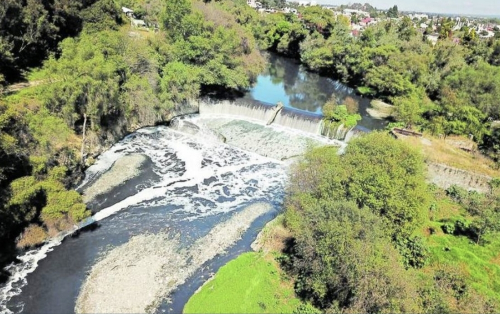

Nuestra propuesta
Concientizar a la población sobre la importancia de cuidar el río Atoyac, promoviendo el manejo y desecho adecuado de productos químicos, medicamentos, aceites y otros residuos que pueden llegar al agua y afectar al ecosistema.
Mediante esta página web se busca brindar información y recomendaciones que ayuden a prevenir la contaminación y fomentar una mayor responsabilidad ambiental en la población.
